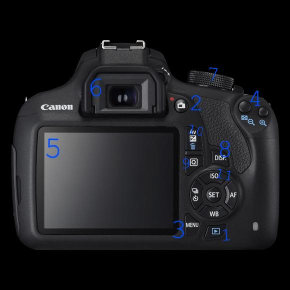
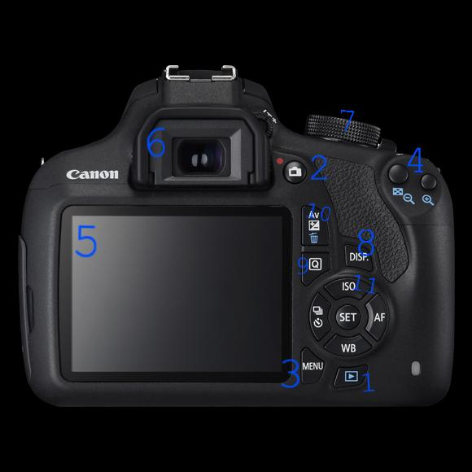
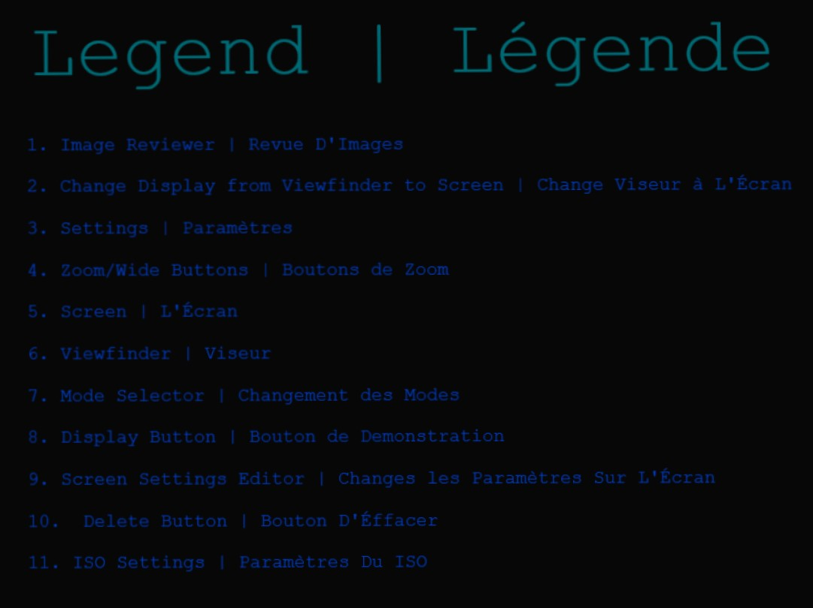
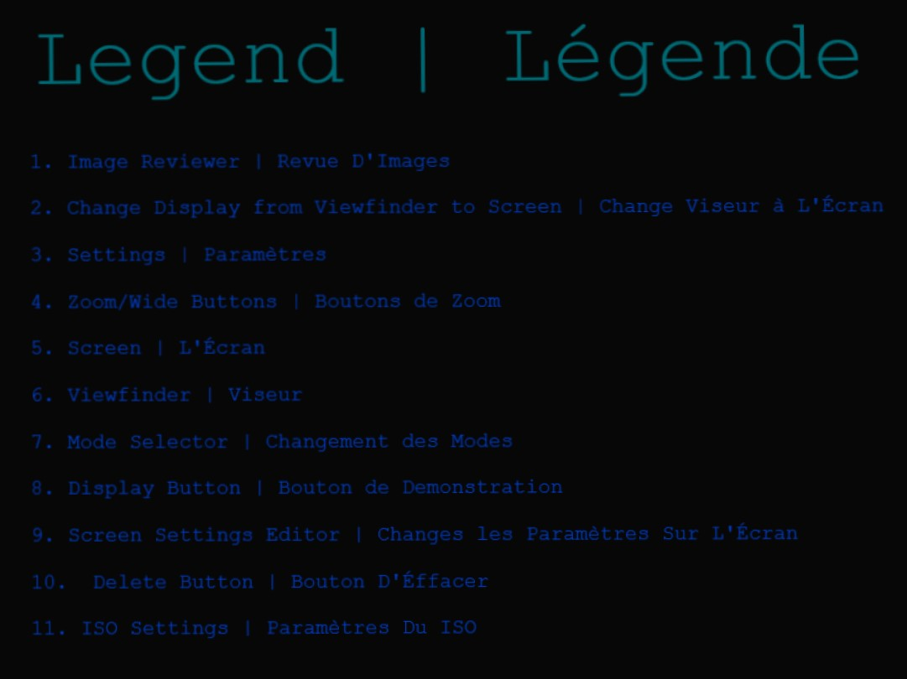

Choosing an area of photography is a good first step in any photographer's journey. I recommend choosing something that you're passionate about. Next you'll need to know the parts of your camera. Fortunately for you, this is an all-inclusive guide to a DSLR. Good Luck! Choisir quel type de photographie, vous voulez poursuivre est un très utile premier pas dans votre chemin d'être un photographe. Il sera plus facile si vous êtes passioné déja de votre chose. Après ça, il faut apprendre à propos de votre appareil photo. Celle ci est un mode d'emploi pour un DSLR. Bonne Chance!
 

 
